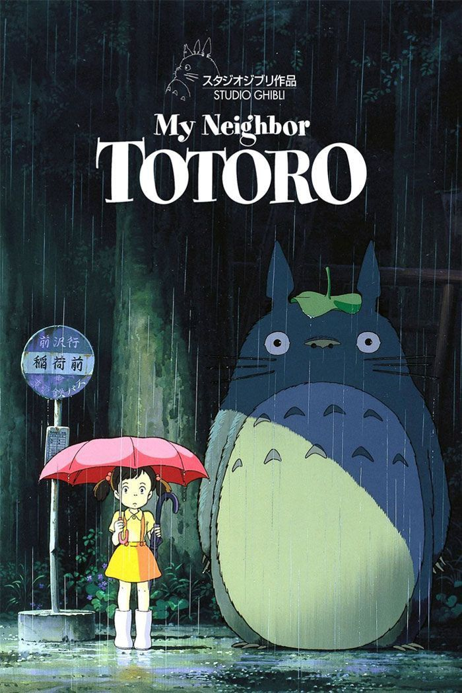

reviews
my neighbor totoro (1988)
rating: 9.5/10
this heartwarming classic features sisters satsuki and mei who move with their father to the countryside to be close to their mother. there, they discover that their house and nearby woods are full of whimsical creatures, including the gentle giant forest spirit called totoro. totoro and his friends introduce the sisters to a series of adventures, including a ride aboard the extraordinary cat bus, as they navigate themes like family, childhood, and loss.
my neighbor totoro was actually the first ghibli film i've watched, back in the summer of 2023. the main reason i gave it such a high rating was not for the story (though i do love it, it just wasn't my favorite!), but for the art (i just love ghibli style in general), the aesthetic (everything is set in nature and feels super serene and whimsical!), the music (i love listening to the soundtrack! i personally recommend the path of the wind, my neighbor totoro, the village in may), and the characters (obviously, totoro, as well as the cat bus, soot gremlins, and the mini totoros).

kiki's delivery service (1989)
witches, such as kiki, leave their families on the night of the full moon when 13 years of age, to explore the world and their craft. kiki embarks on her journey with her sarcastic blcack cat, jiji, where she uses her unique skills to run a delivery service!
like totoro, i love the aesthetic for this film! i also really love jiji (i love mc x sarcastic pet duos, kinda like mulan x mushu). also love some of the music like a town with an ocean view as well as departure. however, i find the storyline not to be the most captivating (though i still love the concept of the delivery service, sometimes it felt a bit random), and tombo reminded me too much of where's waldo.
rating: 8/10
princess mononoke (1997)
rating: 7/10
while protecting his village, the warrior ashitaka is inflicted with a deadly curse. in search of a curse, he stumbles upon a conflict between lady ebosh along with her people if iron town, and princess mononoke, a young girl raised by wolves, who will stop at nothing to prevent the humans from destroying her home, the environment, the forest spirits, and the animals.
princess mononke touches on some very relevant and temporal themes - man's conflict with the environment. the story was cohesive, unique, and filled with action. it displays a spectrum of varying viewpoints on this environmental topic, making it a very powerful and impactful film. the only reason it's rated low (that is, compared to the other films here), is because i didn't find it particularly aesthetically pleasing (again, that is compared to the other films!), and strangely, i think that's something i value a lot.
spirited away (2001)
rating: 10/10
chihiro's family is moving to a new house, but when they stop on the way to explore an abandoned village, her parents undergo a mysterious transformation and chihiro is whisked into a world of fantastic spirits ruled over by the sorceress yubaba. put to work in a magical bathhouse for spirits and demons, chihiro must use all her wits to survive in this strange new place, find a way to free her parents and return to the normal world.
i really love this movie! the story was super engaging and captivating, the characters were unique and iconic, and i also love the overall aesthetic of it (in terms of aesthetics, i still like totoro the most, however)!

howl's moving castle (2004)
rating: 7.5/10
sophie, a quiet girl working in a hat shop, finds her life thrown into turmoil when she is literally swept off her feet by a handsome but mysterious wizard named howl. the vain and vengeful witch of the waste, jealous of their friendship, puts a curse on Sophie and turns her into a 90-year-old woman. on a quest to break the spell, Sophie climbs aboard Howl's magnificent moving castle and into a new life of wonder and adventure. But as the true power of Howl's wizardry is revealed, sophie finds herself fighting to protect them both from a dangerous war of sorcery that threatens their world.
something i really like about this film: the soundtrack! i absolutely love merry-go-round of life. the reason i don't have it higher rated is because the story wasn't too interesting to me (i don't know what happened but when i watched it i was only half payying attention). however, i'm definitely going to watch it again because, as i stated before, i wasn't really paying attention.
the wind rises (2013)
rating: 9.5/10
jiro horikoshi is fascinated by aviation but unable to become a pilot due to a medical condition. he moves to tokyo in 1923, surviving the great kanto earthquake to become a highly accomplished airplane designer. as rumors of war escalate, jiro reunites with nahoko, a young woman he met during the earthquake years earlier. the two fall deeply in love, just as nahoko falls ill with tuberculosis.
i really love this movie! the style actually felt a bit different than other ghibli mobies (probably because it was made more recently), as it did not incorporate any elements of fantasy. however, the story was still super inspiring - i'm not kidding when i say that i was seriously pondering becoming an aerospace engineer after watching it, and the love story did not feel cliché at all and was actually really beautiful and tragic! additionally, i love the art style, the overall aesthetic of the film, the only reason it's short of a 10 is because there wasn't any iconic characters. like... totoro, or kiki, or jiji, calcifer, or no face. don't get me wrong, i still loved all the characters, but half of the fun is buying cute merchandise!
the final line-up
tbh, i don't really have a favorite film, these are just my thoughts for now
- spirited away
- my neighbor totoro
- the wind rises
- kiki's delivery service
- howl's moving castle
- princess mononoke